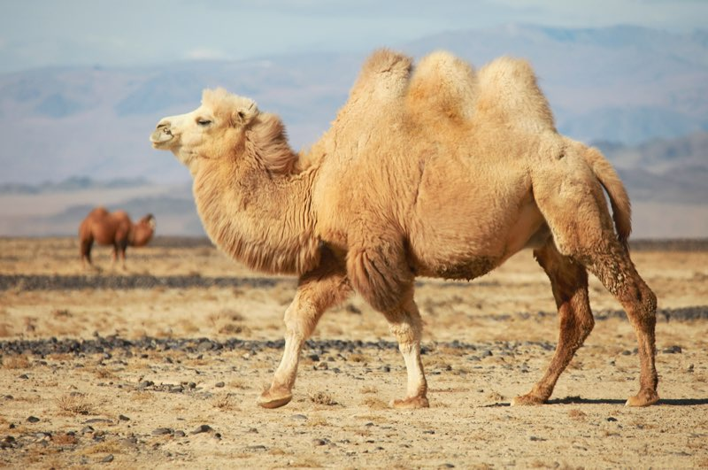

It’s Friday afternoon, so allow me a small story and an opinion.
My Mac mini felt warm today. Not hot, just warmer than a computer doing nothing has any right to be. In the old days I would have opened Activity Monitor, squinted at it, killed something that looked suspicious, and hoped for the best. Today I typed one sentence to my AI assistant: my mac mini is warm, what is it doing?
It came back with the culprits in seconds. A Python script had been happily walking through a node_modules folder for twenty days. A shell loop without a sleep had been spinning on a CPU core for six. And the punchline: both were leftovers from earlier AI sessions. The AI had made the mess, and the AI found it. I’ll take that as character development.
What struck me was not the answer, but how it got there. top, ps, lsof, pmset. Tools that have been around for most of my career. Nothing new, nothing magic. Just the old Unix toolbox, used by someone who actually remembers all the flags.
Nobody knows them all
Let’s be honest. Nobody knows all of these tools. Each has dozens of options, and the useful combinations run into the thousands. I have used find for decades and I still look up how to exclude a directory. Most of us know less than five percent of it, and search for the rest.
It is the same with every big tool we use. You write documents in a word processor with the handful of menus you know by heart. You code in your IDE with twenty shortcuts and actions, and every now and then you go hunting for “that one action you can’t really remember, but know is there somewhere”.
The tools were never the problem. They are documented, they talk plain text, and they have been patiently waiting for thirty years. The problem was always the size of our heads. And now there is something that has read all the manuals, and we just type English.
And then there is Camel
You can probably see where this is going. Apache Camel is twenty years old. It has more than 300 connectors, thousands of options, the Enterprise Integration Patterns, the Simple language, data formats, error handlers, and a lot of hard-won detail in every corner. I have worked on Camel for most of those twenty years, and I don’t know all of it. Nobody does. Every Camel user has their own five percent: the connectors they use every day, and a vague memory that “there was an option for that”.
So it makes me smile to think that a user can now say poll this S3 bucket, split the CSV, send each row to Kafka, and retry when Kafka is down, and get a route that uses the options they never knew existed. The other ninety-five percent of Camel is finally reachable.
There is one condition, though. My warm Mac mini got a correct answer because the AI read real ps output, it did not guess. That is why so much of our recent work in Camel has been about being readable for machines: a catalog generated from the code, documentation examples that the build checks, an MCP server, and a CLI that tells you what a running integration is actually doing. Give the AI facts, and it stops making things up.
A Friday thought
I don’t think the lesson is “AI knows everything”. The two runaway processes on my desk prove otherwise. AI still needs the habits of a careful engineer: limits on what it runs, a way out of every loop, and someone who checks that things actually stopped.
But I do think something changed. For thirty years we have built powerful tools and then expected humans to remember them. Maybe the tools were fine all along, and we just needed a better way to ask.
Have a nice weekend.
PS: The underlying point, of course: I have watched frontier models use the Camel CLI, the catalog and the MCP server to do work that was not possible six to twelve months ago, and certainly not a few years back. And it does not feel like “AI slop” at all: the routes are real Camel, checked against real Camel. Within a year I think even local models will be great at doing Camel work. Okay, that is my opinion.